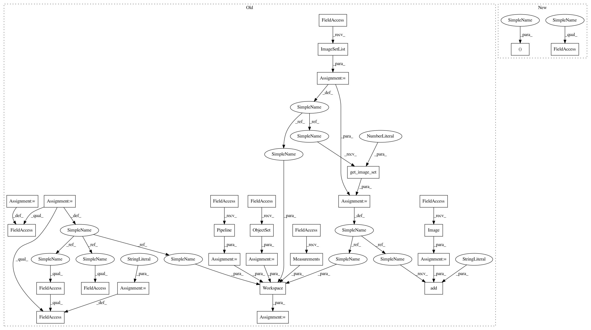

d90c2edfc32f0a9829270fc6e1f201df05df4630,cellprofiler/modules/tests/test_identifysecondaryobjects.py,TestIdentifySecondaryObjects,test_02_03_two_objects_propagation_image,#TestIdentifySecondaryObjects#,275
Before Change
self.assertEqual(parents[0],1)
def test_02_03_two_objects_propagation_image(self):
p = cpp.Pipeline()
o_s = cpo.ObjectSet()
i_l = cpi.ImageSetList()
img = np.zeros((10,20))
img[2:7,2:7] = .3
img[2:7,7:17] = .5
image = cpi.Image(img)
objects = cpo.Objects()
labels = np.zeros((10,20),int)
labels[3:6,3:6] = 1
labels[3:6,13:16] = 2
objects.unedited_segmented = labels
objects.small_removed_segmented = labels
objects.segmented = labels
o_s.add_objects(objects, "primary")
i_s = i_l.get_image_set(0)
i_s.add("my_image",image)
m = cpm.Measurements()
module = cpmi2.IdentifySecondary()
module.primary_objects.value="primary"
module.objects_name.value="my_objects"
module.image_name.value = "my_image"
module.method.value = cpmi2.M_PROPAGATION
module.regularization_factor.value = 0 // propagate by image
module.threshold_method.value = cpmi.TM_MANUAL
module.manual_threshold.value = .2
workspace = cpw.Workspace(p,module,i_s,o_s,m,i_l)
module.run(workspace)
self.assertTrue("my_objects" in m.get_object_names())
self.assertTrue("Image" in m.get_object_names())
self.assertTrue("Count_my_objects" in m.get_feature_names("Image"))
After Change
labels = np.zeros((10,20),int)
labels[3:6,3:6] = 1
labels[3:6,13:16] = 2
workspace, module = self.make_workspace(img, labels)
module.method.value = cpmi2.M_PROPAGATION
module.regularization_factor.value = 0 // propagate by image
module.threshold_method.value = cpmi.TM_MANUAL
module.manual_threshold.value = .2
module.run(workspace)
m = workspace.measurements
self.assertTrue("my_objects" in m.get_object_names())
self.assertTrue("Image" in m.get_object_names())
self.assertTrue("Count_my_objects" in m.get_feature_names("Image"))
counts = m.get_current_measurement("Image", "Count_my_objects")
In pattern: SUPERPATTERN
Frequency: 3
Non-data size: 28
Instances
Project Name: CellProfiler/CellProfiler
Commit Name: d90c2edfc32f0a9829270fc6e1f201df05df4630
Time: 2010-06-01
Author: leek@1fc53939-2000-0410-845c-e8453a809027
File Name: cellprofiler/modules/tests/test_identifysecondaryobjects.py
Class Name: TestIdentifySecondaryObjects
Method Name: test_02_03_two_objects_propagation_image
Project Name: CellProfiler/CellProfiler
Commit Name: dd146de9ff9a3adbea8404dde409493f7d6819ae
Time: 2013-02-28
Author: leek@broadinstitute.org
File Name: cellprofiler/modules/tests/test_identifyprimaryobjects.py
Class Name: test_IdentifyPrimaryObjects
Method Name: test_17_01_regression_holes
Project Name: CellProfiler/CellProfiler
Commit Name: d90c2edfc32f0a9829270fc6e1f201df05df4630
Time: 2010-06-01
Author: leek@1fc53939-2000-0410-845c-e8453a809027
File Name: cellprofiler/modules/tests/test_identifysecondaryobjects.py
Class Name: TestIdentifySecondaryObjects
Method Name: test_02_03_two_objects_propagation_image
Project Name: CellProfiler/CellProfiler
Commit Name: dd146de9ff9a3adbea8404dde409493f7d6819ae
Time: 2013-02-28
Author: leek@broadinstitute.org
File Name: cellprofiler/modules/tests/test_identifyprimaryobjects.py
Class Name: test_IdentifyPrimaryObjects
Method Name: test_08_02_per_object_otsu_run